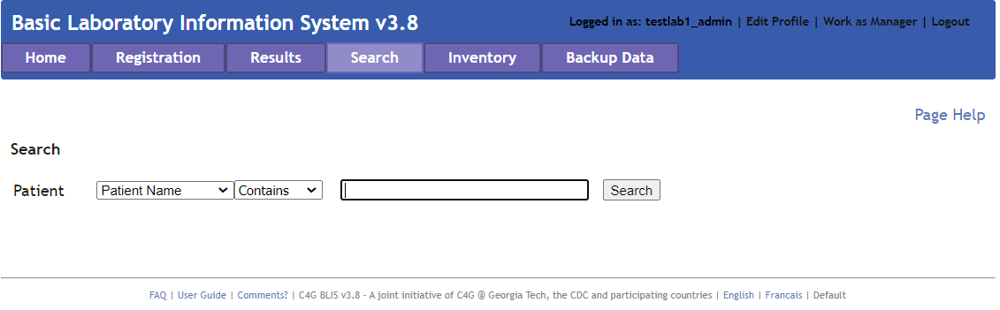
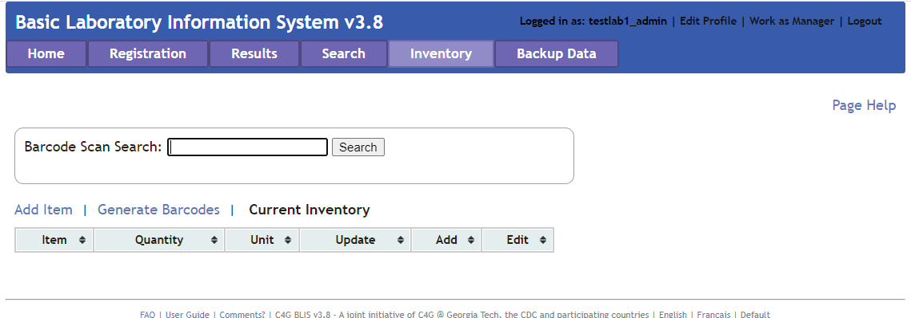

Technician Overview¶
The technician interface allows the Technician to do the following:
- Register new patients and look up existing patients.
- Add results for a patient based on the specimens provided.
- Manage existing reagents currently being tracked in BLIS.
Users with Admin rights can click the Work as Manager link in the top right corner to switch to the Lab Manager view.
Users with only Technician rights can access their profile page by clicking Edit Profile. Users can edit their profile to add or change email, phone, and language. Click on the Change Password link to change the user's password.
Note
The Username cannot be changed after creation.
Registration ¶
The Registration page allows the Technician to register new patients or lookup existing patients based on name, patient ID or number.
Add New Patient ¶
To add a new patient: Click the Search button without entering any search criteria. The Add New Patient link appears, illustrated in the red circle in the image below.

Also, if no results are found for the desired patient, an option to create a new patient will be presented and the searched name will automatically be filled into the new patient form. Click the link and wait for a dialog box to appear on the screen. Fill in the blank fields and check the appropriate elements. Elements with asterisks * are mandatory.
Click on Submit to save, or Cancel to discard changes and return to patient look-up page.

Patient Look-Up ¶
Once a patient has been registered, the Technician can use the Registration page to view or edit patient profiles. Additionally, a specimen the patient has provided for a particular test can also be registered.
Click on the drop-down list and select patient name, ID, or number. Type in the blank space the patient name, ID, or number. Enter all available patient information for the best search results.

Add or Edit a Specimen Record ¶
To add or edit a specimen record, first begin by finding the patient to whom the specimen belongs to. Then, click the Register Specimen link to the right of the patient name.

Fill in the blank fields and check the appropriate elements. Elements with asterisks * are mandatory.

Click on Submit to save, or Cancel to discard changes and return to patient look-up page. Click Add Another Specimen to add another specimen for this patient.
Results ¶
The Results page allows the Technician to see, evaluate, and verify results for collected specimens.
Single Specimen Results¶
This option allows the Technician to add results for a patient based on the specimens provided and Lab sections to which the specimen tests are registered. Click on the drop-down list and select patient name, ID, or number. Type in the field at least 2 characters to search.

To add or edit a specimen record: Find the patient as above and then click the Enter Results link to the right of the patient name. Fill in the blank fields and check the appropriate elements.
Click on Submit to save, or Cancel to discard changes.
Batch Results¶
This option allows the Technician to add results for a particular Test Type.
Select a test for which to find results. Set a date range, then click Search. The results appear without patient names. Click on Submit to save, or Cancel to discard changes.

Verify Results¶
This option allows the Technician to verify the result based on the test type. It shows the list of results for all patients whose results have not been verified. Here, results can be modified and entered prior to verifying.

Select a Test Type and click Search. All test results for that test appear. Look over the test results for accuracy. Edit the results as appropriate. When finished, click on Verify, or Cancel to discard changes. Choosing Verify opens a confirmation dialog box.
Click OK to mark results as verified, Cancel to discard changes.
Worksheet¶
This option generates a worksheet based on the Lab Section and Test Type. In lab settings where data are not entered at the point of service, the data entry staff enter patient information and the tests ordered, then print the worksheet so that lab technicians can write test results and other data to be entered into BLIS. Custom worksheet which can be created by Admins using Lab Configuration > Tests > Reports > Worksheet.
Create a blank worksheet by choosing the Keep Blank option and specifying the number of rows needed. Click Submit to create the worksheet.

After generating the worksheet, click on a column heading to sort the table by that field. Other features include Print in portrait (default) or landscape view, Export as a Word Document, or Close the page. If Export is selected, the default option is to open the Word document. The document can be printed or saved from Word.
Search ¶
This page allows the Technician to search for a patient by name, number, or ID. Enter a partial name or ID (at least 2 characters) to generates a list of matches.

Click View Profile to view the patient’s profile and test history.
From the test history section, click Details for specimen information. Then, choose Get Report for a specimen report; Track Actions to view a log of actions on that specimen, or Enter Results to enter the specimen analysis results. A report can be generated from the test history section on the profile page by clicking the Report link.
From the profile page, other features include can also Register New Specimen, Update Profile, or Print Patient Report.
Inventory ¶
Current Inventory¶
This link displays the reagent quantities currently in stock. It is not editable. To edit the list, click Add Reagent.

Add Item¶
Click Add Item to add a new item to the list. Update the stock as more reagents are acquired by adding the reagent name, quantity received, receiver name, and remarks.

Click Submit to save changes.
Generate Barcodes¶
Clicking Generate Barcodes allows the Technician to generate a unique barcode. To do so, enter text into the field on the page, and press Generate. After generating the barcode, print them by pressing the Print button.

Backup Data ¶
The Backup Page is similarly designed to the Backup Data feature available for Lab Managers.
See Also
The Backup Data functionality can be found in the Lab Manager section on Backup Data.